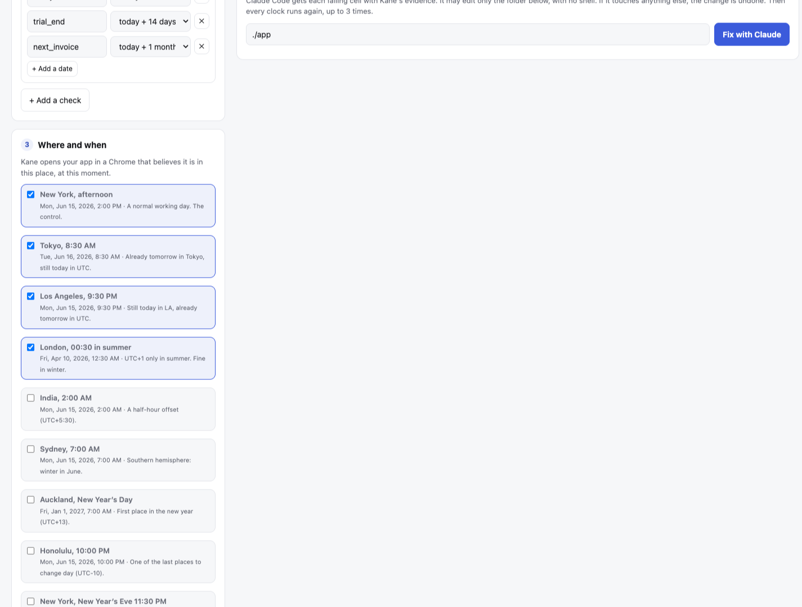
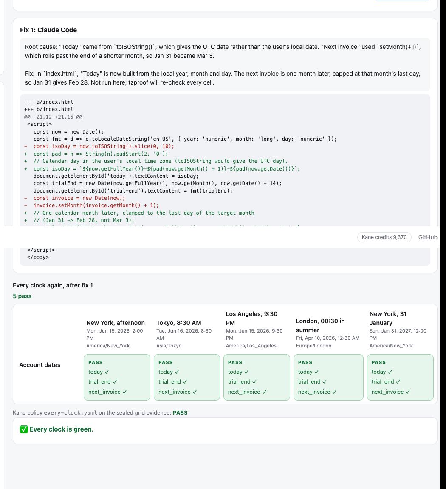

tzproof opens your web app in a real Chrome that believes it is somewhere else, at some other moment. Kane CLI uses the app like a person and reads every date it shows. tzproof checks each date for that user, and your coding agent fixes what is wrong until every clock is green.
A billing page with two of the most common date bugs. Pick where and when the user is. The left column is what the page shows; the right is what that user should see. This demo runs in your browser; tzproof does the same thing for your real app, with Kane in a real Chrome.
For each place and time, tzproof starts Chrome in that time zone with its clock moved, and Kane CLI uses your app in it, storing the dates it sees.
tzproof works out the right calendar day for that user and compares. Kane also checks; when they disagree, the code wins.
Failing cells and Kane's evidence go to Claude Code. It may edit only your app. Then every clock runs again, until all are green.
Everything here comes from runs committed in the repo, with Kane's raw output.


Node 20+, Google Chrome, and Kane CLI with a free TestMu AI account.
npm install -g @testmuai/kane-cli && kane-cli login git clone https://github.com/Milliebanned/tzproof && cd tzproof && npm install node bin/tzproof.js ui examples/fix-loop/tzproof.yaml # tzproof Studio node bin/tzproof.js run your-app/tzproof.yaml # or the command line
Also: a Claude Code Stop hook that keeps the agent from saying "done" while any clock is red, and a Kane policy gate for CI. See the README.